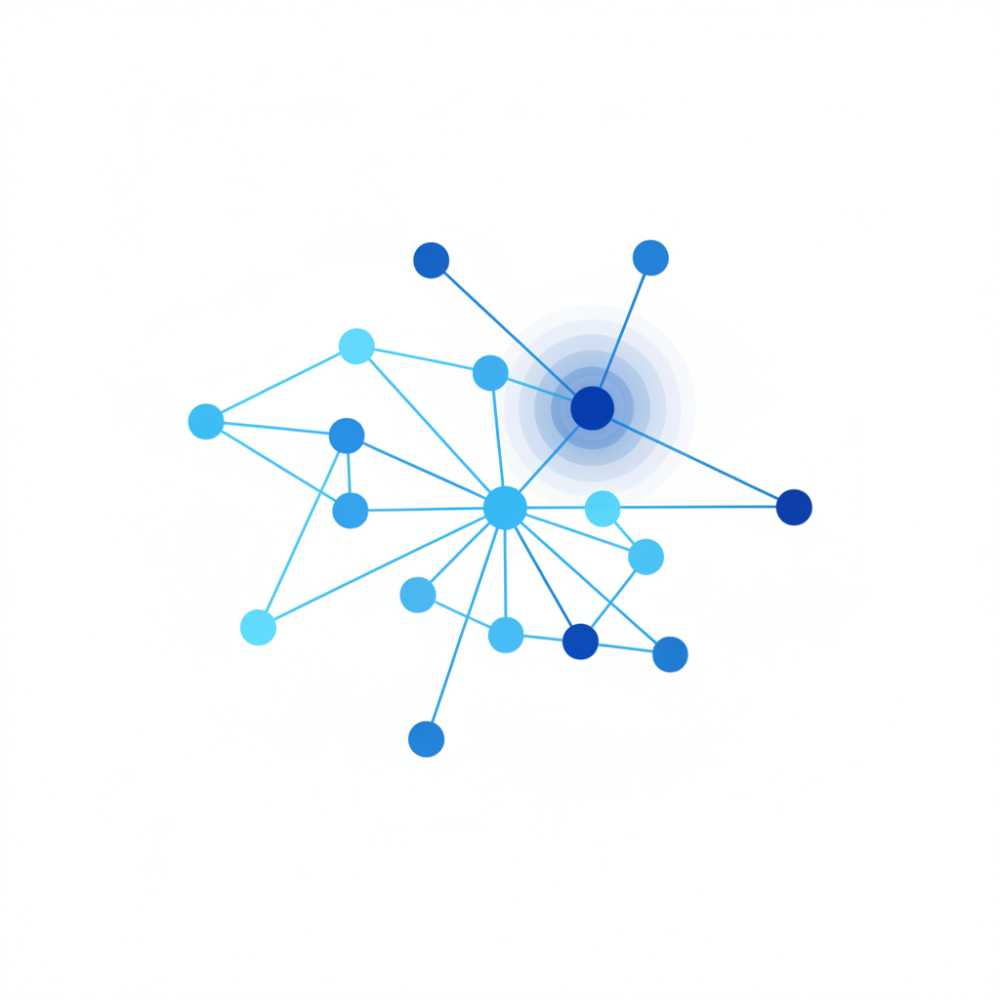

一、三个好意，一场静默崩塌
这件事的全貌比表面看到的更荒诞。
3月4日，推理强度从高调到中。理由是用户体验——界面不再"假死"了。这不是一个拍脑袋的决定，有AB测试数据支持："中等强度的智能略有下降，但延迟显著减少。"
3月26日，第二个变更上线——一个缓存优化。原本的设计是清理闲置超过一小时的session中过旧的思考记录。但实现有bug：它不是只清理一次，而是每一轮对话都在清。AI在持续丢失自己之前思考过的内容。
4月16日，第三个变更：为了准备Opus 4.7的发布，给系统提示词加了一条规则——两次工具调用之间，回复不超过25个词。独立测试显示编码质量下降3%。
三个变更，各自合理，各自微小，在不同时间由不同团队上线。Anthropic的复盘报告原话："因为每个变更影响不同的流量切片、在不同时间生效，叠加后的效果看起来像是广泛的、不一致的退化。"
这里有一个细节值得停下来想想：Anthropic的内部eval（评测系统）在这六周内没有报警。他们自己说："内部使用和eval最初都没有复现用户反馈的问题。"用Opus 4.7做Code Review时才发现了Opus 4.6漏掉的东西。
也就是说，评测AI质量的AI——也没发现AI变蠢了。
二、推理越强，幻觉越多——一篇让人不安的论文
如果Claude Code事件只是一个工程事故，它值不了一篇文章。让这件事从"事故"升级为"征兆"的，是2026年ICLR上的一篇论文。
论文标题叫"The Reasoning Trap"（推理陷阱），核心发现只有一句话：用强化学习让模型推理能力变强时，工具调用的幻觉率会同步上升。
不是"有时候会"，是"必然会"。两条曲线绑在一起往上走。
OpenAI的数据验证了这一点：o3模型的幻觉率是33%，是前代o1的16%的两倍多。更小的o4-mini达到了48%。越"聪明"的模型，在使用工具时越会编造不存在的API、虚构不存在的函数调用。
论文揭示了原因：强化学习训练推理能力时，"不当地压缩了与工具可靠性相关的内部表征"。退化发生在网络的后期层——恰好是本该阻止错误工具调用的那一层。
用更朴素的话说：模型学会了"怎么想得更深"，代价是忘了"什么时候该住手"。
Claude Code事件里的read-to-edit ratio暴跌，本质上是同一件事的另一个切面：AI不是不能读更多文件——而是"更快"的优化目标，训练出了"不读就动手"的行为模式。
这不是个案。这是一个规律：每次你优化AI在某个维度变强，它就会在另一个维度——通常是你没有设监控的维度——变弱。
研究者测试了缓解方案。结论让人沮丧："缓解策略有效，但代价是用能力换可靠性——你只能要一个。"
三、47%的决策基于幻觉，但没人知道是哪47%
德勤2026年的调查数据：47%的企业AI用户承认，至少有一个重大商业决策是基于AI的幻觉内容做出的。38%的企业高管报告因AI幻觉输出做出过错误决策。
但这里有一个比数字本身更恐怖的事实：这些人是事后才知道的。 做决策的时候，没人能分辨哪些AI输出是可靠的，哪些是幻觉。
这和Claude Code事件呈现了完全相同的结构：退化是真实的，但在发生的当下不可感知。
96%的企业已经在生产环境运行AI Agent。94%担心Agent蔓延带来的复杂性和风险。但只有12%有一个集中平台来管理它们。
2026年AI可观测性市场爆发了——17家以上的专业工具涌现，Arize、Braintrust、Confident AI争相提供"AI质量监控"。但这个行业面临一个先天缺陷：你只能监控你知道的维度。
Claude Code的read-to-edit ratio在事件发生前不是任何监控仪表盘上的指标。它是事后复盘时才被发明出来的度量方式。在那六周里，它不存在于任何人的认知中。
多Agent系统放大了这个问题。普林斯顿的研究发现：在共享记忆的多Agent系统中，一个Agent的幻觉会传播给所有下游Agent。一个早期的错误工具调用，变成了所有Agent的共享"事实"。
这意味着：退化不仅不可测量，还会自我扩散、自我强化。一个小错误不会停留在它发生的地方——它会穿过整个系统，在每个节点留下一层薄薄的、几乎不可察觉的偏差。

四、为什么"变蠢"比"出错"更难被发现
传统软件有一个特性：它要么work，要么不work。服务器宕机，你立刻知道。数据库损坏，查询直接报错。
AI Agent不一样。它变蠢之后，不会停止工作。它会继续产出——只是质量下降了。而且是那种只有深度使用者才能凭直觉感受到、但很难用数据证明的下降。
Anthropic在复盘中承认了这一点：用户的报告"最初很难与正常的反馈波动区分开来"。用户说"感觉变差了"，和用户说"今天心情不好觉得AI不好用"，在数据端看起来一模一样。
这就是为什么Claude Code的问题持续了六周。不是Anthropic不在乎——他们一直在调查。但"AI变蠢"不像"AI宕机"，它没有一个清晰的阈值可以触发警报。
MIT 2026年4月发表的RLCR（校准奖励强化学习）研究揭示了问题的根源：标准训练方法"给模型表达不确定性没有任何激励"。模型自然学会了不管确不确定都给出同样自信的答案。一个正确率只有50%但永远表示"我95%确信"的系统，比一个会直接答错的系统更危险——因为用户没有任何信号去寻求第二意见。
问题的根子比技术更深：我们对"智能"的度量方式本身就是功能主义的。
Benchmark测的是什么？是输出的正确率——给一个输入，输出是否正确。这是一个黑箱评估：只看结果，不看过程。
Claude Code的read-to-edit ratio衡量的恰恰是"过程"：AI在动手之前读了多少。但没有任何主流benchmark包含这类"过程性"指标。我们的评测体系天然看不见"AI是否在认真思考"——它只能看见"AI是否输出了正确答案"。
当一个AI系统从"仔细思考后给出答案"退化为"快速猜测后给出答案"，如果答案的正确率只下降了3%，我们的评测系统会说：没什么问题。但所有用那个AI写代码的人都会感到：什么地方不对劲。
这3%在benchmark上是噪声。在六千个开发者的日常工作中，是灾难。
五、按下葫芦浮起瓢
6.6降到2.0。
一个工程师出于好意，把推理强度调低了一档。目的是让界面不再"假死"。这在用户体验的维度上是一个改进。在思考深度的维度上，是一场静默的崩塌。
ICLR论文的作者们出于好意，用强化学习让模型推理更深。这在推理benchmark上是一个进步。在工具调用可靠性的维度上，是一场同步的倒退。
17家AI可观测性公司出于好意，提供了各种监控工具。但它们只能监控已知维度——而退化总是发生在未知维度。
AI不是一个"越优化越好"的系统。它是一个"按下葫芦浮起瓢"的系统。每一次按下去的葫芦都是可测量的、可报告的进步。每一个浮起来的瓢都在盲区里，等着被六千个用户的模糊直觉在六周后发现。
这才是AI行业藏得最深的bug——不在任何一行代码里，在"进步"的定义里。
我们用什么来衡量AI进步？更高的benchmark分数、更快的推理速度、更低的延迟、更多的工具调用能力。这些指标有一个共同的盲区：它们全部指向输出端。没有一个指标衡量AI在动手之前犹豫了多久、放弃了几次、选择不做什么。
当整个行业都用这套指标来赛跑时，Claude Code事件不会是最后一次。它是第一次被发现的。在它之前和之后，一定还有更多的"6.6到2.0"正在发生——在其他公司的其他产品里，在你正在使用的某个AI工具里——只是还没有人把read-to-edit ratio算出来而已。
面对这个现实，有且只有一个诚实的建议：当你的AI助手开始变得更快、更流畅、更"高效"的时候——警惕。那可能恰好是它变蠢的时刻。